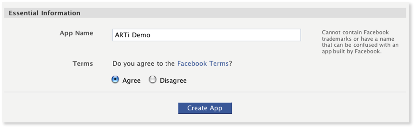
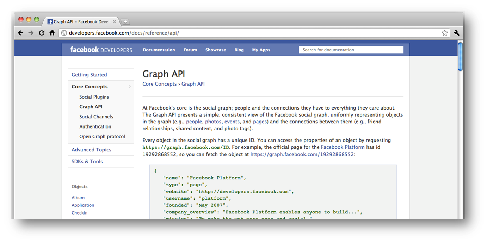

Integrating Contacts & Social APIs
Address Book & Social APIs
Agenda
- Overview of contacts
- Retrieving contact basics
- Facebook Apps & Quick Setup
- Using the Graph API
- Demonstration
- Q&A
Overview of Contacts
Contacts are globally accessible.
However there are limitations.
| iOS | Android | |
| View contacts | View contacts | |
| Add new contacts | ||
| Remove contacts | ||
| Group contacts |
Retrieving Contacts
Contact retrieval - get array of Person objects
var people = Titanium.Contacts.getAllPeople();
var people = Titanium.Contacts.getPeopleWithName();
Platform-specific contacts picker:
showContacts()
You cannot trace output to console
Contact Data Structure
Groups & Person
Ti.Contact.Person - Represents a single contact
Ti.Contact.Group - Represents a group of contacts
Contact Person
There are strings & objects
| Strings | Objects | |
| firstName | url (was URL) | |
| lastName | address | |
| Created | date | |
| modified | ||
| birthday |
Facebook Introduction
- Must have a valid Facebook Account
- Need to create an App
- http://www.facebook.com/developers/

Facebook Apps

Create an App Name:
Your App Name
Facebook Apps
Once your done this is the screen you'll see.
We are only concerned with one other section.
Mobile & Devices

Facebook Apps
You need the following:
Application Type: Native App
Application ID
Application Secret

Facebook Apps

Sandbox Mode!
Facebook Configuration
In tiapp.xml (required for iOS only)
< property name="ti.facebook.appid" >XXXX< / property >
In your app:
Ti.Facebook.appid = "XXXXXXX";
Ti.Facebook.permissions = ['publish_stream'];
Facebook Permissions
http://developers.facebook.com/docs/authentication/permissions/
Can customize:
- offline_access
- sms
- publish_stream
- create_event
- rsvp_event
- publish_checkins
- user_birthday
- user_website
Facebook & Mobile Experience

Facebook Graph API

Q&A

Lab Goals
Integrate with Facebook:
- Add Facebook Login button
- Add Share on Facebook button (brag about your bounties!)
- Use our Facebook App ID
- Demo and Wiki URL
Lab Exercise